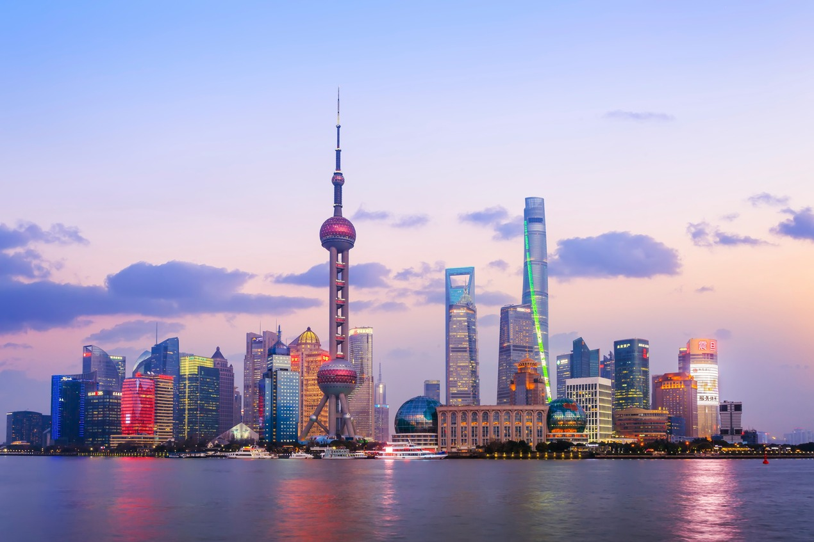

https://images.unsplash.com/photo-1538428494232-9c0d8a3ab403?q=80&w=1740&auto=format&fit=crop&ixlib=rb-4.1.0&ixid=M3wxMjA3fDB8MHxwaG90by1wYWdlfHx8fGVufDB8fHx8fA%3D%3D
Shanghai liegt an der Ostküste Chinas, am Ostchinesischen Meer und am Fluss Jangtsekiang, auch als Yangtze River bezeichnet. Mit rund 30 Millionen Einwohnern im Großraum Shanghai (Stand 2025 laut Statista) zählt die Metropole zu den meistbevölkerten der Welt und mit 6.340 km² auch zu den flächenmäßig größten.